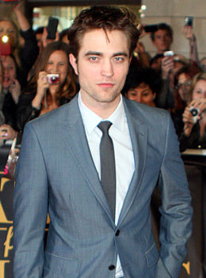

John David Washington is de Protagonist in Christopher Nolans nieuwe film, de actiethriller Tenet. Slechts gewapend met één woord – Tenet – moet de Protagonist de wereld zien te redden van de ondergang reizend door een schemerwereld van internationale spionage op een missie die zich afspeelt buiten de bestaande tijd. Niet tijdreizen, maar Inversie. De internationale cast van Tenet bestaat daarnaast uit Robert Pattinson, Elizabeth Debicki, Dimple Kapadia, Martin Donovan, Fiona Dourif, Yuri Kolokolnikov, Himesh Patel, Clémence Poésy, Aaron
Taylor-Johnson, Michael Caine en Kenneth Branagh. Nolan schreef en regisseerde de film en maakte gebruik van een combinatie van IMAX®- en 70mm-film. Tenet is geproduceerd door Emma Thomas en Nolan. Uitvoerend producent is Thomas Hayslip. Nolan’s creatieve team bestond uit director of photography Hoyte van Hoytema, production designer Nathan Crowley, editor Jennifer Lame, kostuumontwerper Jeffrey Kurland, visual effects supervisor Andrew Jackson en special effects supervisor Scott Fisher. De muziek werd gecomponeerd door Ludwig Göransson. Tenet werd in zeven landen op locatie gedraaid. Warner Bros. Pictures presenteert een Syncopy productie, een film van Christopher Nolan. - Bron: Wikipedia-bijdragers. (2020, 31 augustus). Tenet. Wikipedia.
